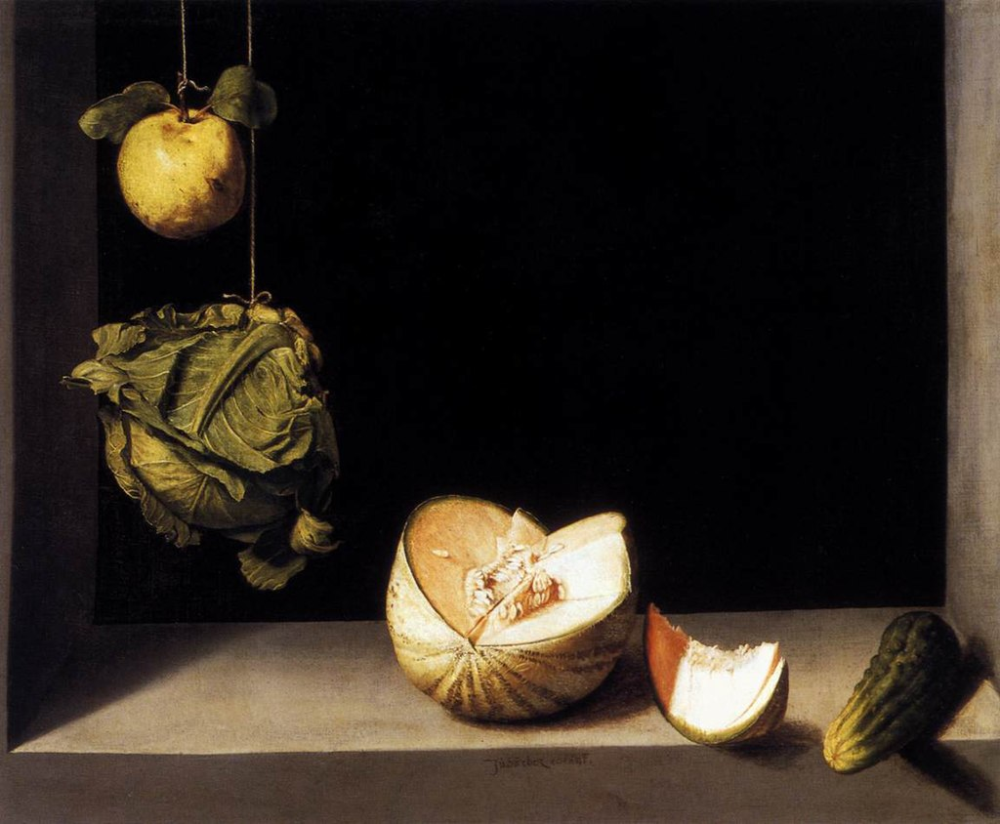
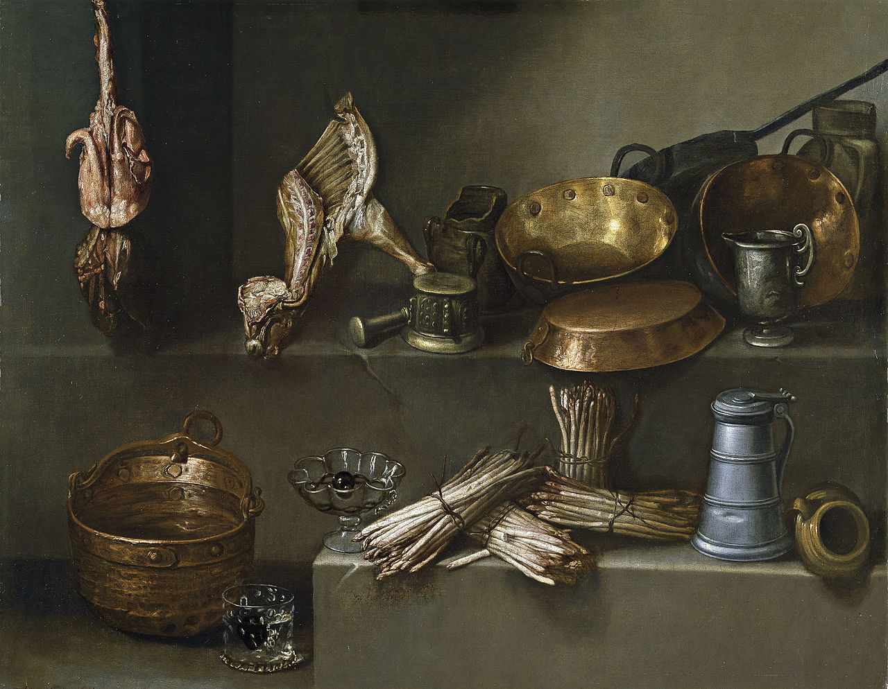
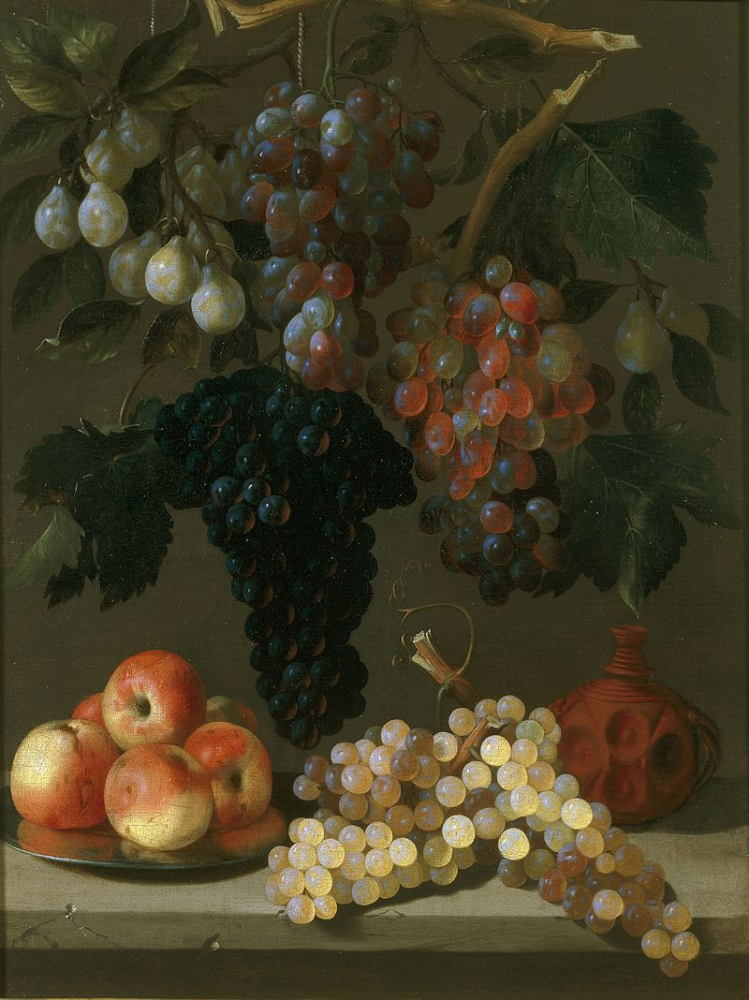
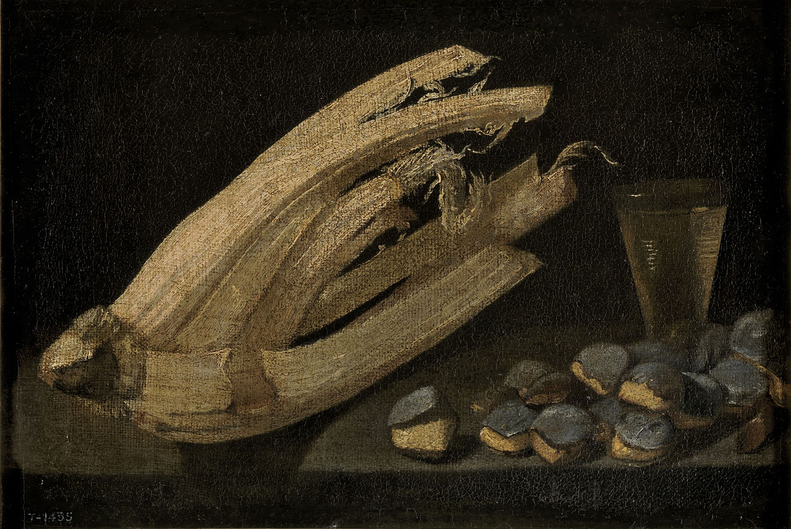
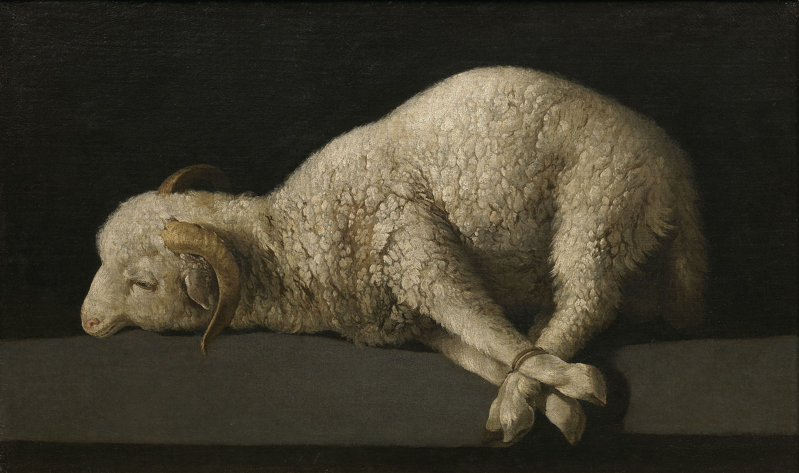
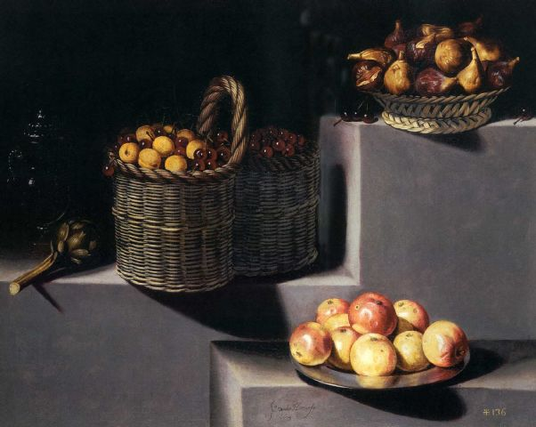

Bodegón


In the first, María Igualada, a resident of Madrid, claims to be the widow of Ignacio Arias, professor of the Art of Painting, and that all her assets, consisting of some paintings and household items, are of very little consideration and value. The well-known paintings, two kitchen still lifes, are in the naturalistic tradition.

Bodegón by Juan Bautista de Espinosa

Bodegón by Francisco de Burgos Mantilla.

Bodegón by Francisco Zurbarán.
